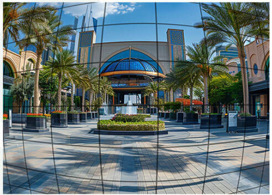
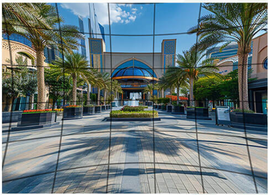

鏡頭畸變校正（LDC, Lens Distortion Correction）原理與技術說明
鏡頭畸變校正（LDC, Lens Distortion Correction）是影像訊號處理（ISP）中用於修正光學鏡頭因幾何構造所產生的「非線性畫面扭曲」的關鍵技術。 特別是在廣角鏡頭（如行車記錄器、安全監控、手機超廣角鏡頭）中，LDC 的調校直接決定了影像邊緣的物體是否會變形走樣。
一、 鏡頭畸變的分類與原理
光學畸變（Optical Distortion）屬於幾何失真，是指影像中各點的放大倍率隨著與光軸（畫面中心）的距離增加而發生變化。這種變形不影響影像的清晰度，但會改變物體的幾何形狀。
1. 徑向畸變（Radial Distortion）
由鏡頭透鏡的固有幾何形狀（通常是球面）引起。這種類型的畸變關於畫面中心（主點）是對稱的，主要分為兩種：
- 桶形畸變（Barrel Distortion）：畫面邊緣的放大倍率小於中心。四條邊向外鼓起，常見於超廣角鏡頭（俗稱魚眼效果）。
- 枕形畸變（Pincushion Distortion）：畫面邊緣的放大倍率大於中心。四條邊向內凹陷，常見於長焦鏡頭。
- 鬍鬚畸變（Mustache Distortion）：混合型畸變。畫面中心呈現桶形，到了邊緣卻轉化為枕形。



2. 切向畸變（Tangential Distortion）
由透鏡組合裝配時，多片鏡片之間沒有完美平行、或是光軸中心未對齊（偏心）所引起的幾何不對稱。

二、 LDC 的幾何數學公式
在數學上，校正是透過將「畸變後的影像坐標」對應回「理想的無畸變坐標」來完成。
1. 座標歸一化
假設理想無畸變的像素坐標為 (xideal, yideal)，畫面中心（主點）為 (xc, yc)。首先將座標移動到以中心為原點，並進行歸一化：
計算像素點到中心的幾何距離（半徑）r：
2. 布朗-康拉迪模型（Brown-Conrady Model）
這是目前工業界與 ISP 晶片最通用的幾何畸變數學模型，它同時考慮了徑向與切向畸變。經過畸變後，最終在 Sensor 上看到的真實座標 (xdistorted, ydistorted) 計算如下：
徑向畸變公式：
ydistorted_radial = y × (1 + k1r2 + k2r4 + k3r6 + ... )
- 其中 k1, k2, k3 為徑向畸變係數。
- 若 k1 > 0，傾向產生枕形畸變；若 k1 < 0，則傾向產生桶形畸變。廣角鏡頭通常需要微調到 k3 甚至 k4 才能完美擬合。
切向畸變公式：
ydistorted_tangential = p1(r2 + 2y2) + 2p2xy
- 其中 p1, p2 為切向畸變係數。
完整融合公式：
將兩者相加，即可得到從「理想世界」投射到「畸變硬體」的完整映射公式：
ydistorted = y × (1 + k1r2 + k2r4 + k3r6) + [p1(r2 + 2y2) + 2p2xy] + yc
三、 LDC 的量測與校正方法（Tuning 實務）
在 ISP 晶片調校中，獲取這些 k1, k2, p1, p2 參數的標準流程如下：
1. 標定物拍攝（Calibration Target）
- 工具：使用標準的黑白棋盤格（Chessboard）或圓圈陣列板（Dot Matrix）。
- 拍攝要領：將相機固定，從不同角度拍攝多張標定板照片。必須確保標定板覆蓋到畫面的四個角落，因為邊緣的畸變最為劇烈。
2. 張正友標定法（Zhang's Calibration Method）
這是演算法工程中最著名的標定技術，已被整合進 OpenCV 與 MATLAB 工具箱中。
- 特徵點提取：演算法自動識別棋盤格的每一個內角點（Corner Points）。
- 直線擬合優化：在理想的幾何學中，棋盤格的線必須是絕對的直線。演算法會以「讓校正後的角點在數學上連成完美直線」為優化目標（使用非線性的列文伯格-馬誇特演算法 Levenberg-Marquardt）。
- 輸出參數：計算出相機的內參矩陣（焦距、中心點）以及畸變參數（k1, k2, k3, p1, p2）。
3. 影像重採樣與插值（Pixel Remapping & Interpolation）
得到參數後，ISP 就會建立一張坐標映射表（LUT, Look-Up Table）。
當相機實時拍攝時，ISP 會根據公式反向查找：欲生成無畸變畫面上的第 (A, B) 個像素，應該去原始畸變畫面上的第 (A', B') 個坐標拿數據。
- 技術挑戰：反向計算出來的 (A', B') 通常是浮點數（例如第 12.4, 45.7 個像素）。
- 處理解法：為了防止校正後的畫面出現鋸齒（Aliasing），ISP 內部硬體會使用雙線性插值（Bilinear Interpolation）或雙三次插值（Bicubic Interpolation）來動態計算出該點的 RGB 數值。
四、 LDC 的技術代價與折衷（Trade-offs）
在調整 AWB 時追求的是色彩完美，而調整 LDC 時則是一場畫質與視角的極限拉鋸戰：
| 技術代價項目 | 原理說明 | 調校時的折衷策略 |
|---|---|---|
| 邊緣畫質流失 (Resolution Drop) |
桶形畸變校正是將畫面邊緣「往外拉伸」，這會導致邊緣像素被強行放大，解析度與銳利度會大幅下降。 | 調校時不可追求 100% 完美拉直。通常會故意保留 3%~5% 的微幅畸變（人類肉眼不易察覺），以保留邊緣畫質。 |
| 視角損失 (FOV Loss) |
拉伸後的影像邊緣會變成不規則的形狀（如凹型），為了輸出標準的 16:9 畫面，必須將邊緣裁切（Crop）。 | 這會導致鏡頭的視野角度（FOV）變小。調校時需在「視角廣度」與「線條筆直度」之間取得平衡。 |
| 頻寬與功耗 (Hardware Cost) |
逐個像素進行插值與 LUT 查表需要極高的記憶體頻寬與算力。 | 現代動態錄影（如 4K 60fps）中，ISP 通常會採用網格化 LDC（Grid-based LDC），即不對每個像素單獨計算公式，而是將畫面切成 16×16 的網格，僅對網格頂點進行幾何變換，網格內部則由硬體快速線性過渡。 |
💡 核心結論
LDC 鏡頭畸變校正是利用 布朗-康拉迪模型，透過實驗室拍攝棋盤格標定出畸變係數（kn, pn），並在 ISP 中透過 Look-Up Table 坐標重映射與雙線性插值，將彎曲的畫面實時拉直。調校的核心技術在於平衡邊緣拉伸後的畫質衰減，並在晶片頻寬允許下達到最自然流暢的直線還原。